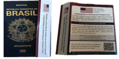

FASE 3 - EXAMES MÉDICOS, CASV E ENTREVISTA
Depois que o National Visa Center (NVC) agendar sua entrevista para o visto, eles enviarão a você, ao seu peticionário e ao seu agente/advogado (se aplicável) um e-mail informando a data e hora do agendamento. Depois de receber uma Carta de Marcação para entrevista do NVC, você deve seguir os seguintes passos ANTES da data da entrevista.
AGENDE E CONCLUA UM EXAME MÉDICO
Você (e cada membro da família ou “requerente de derivado” que estiver solicitando um visto com você) deverá agendar uma consulta médica com um médico autorizado no país onde será entrevistado.Este exame deve ser feito por um médico aprovado pela embaixada, também conhecido como Médico do Painel. Não serão aceitos exames realizados por outros médicos. Os resultados do exame podem levar até 96 horas.Você deve concluir seu exame médico, juntamente com todas as vacinas necessárias, antes da data agendada para a entrevista do visto.
VACINAÇÃO OBRIGÁTORIA PARA FASE NVC
A vacinação é uma etapa muito importante e obrigatória. A dica é atualizar a carteira de vacinação o quanto antes da aprovação da fase USCIS. No SUS temos todas as vacinas solicitadas e de graça.
- A VACINA DA GRIPE É OBRIGATÓRIA de 1 ano de idade em diante
- Vacina da COVID 19. Exigido bivalente duas doses + dose de reforço com menos de 12 meses de aplicação
- Polio até os 18 anos (18 anos em diante não precisa)
- A da febre amarela não é obrigatória, MAS SERÁ ANOTADA SE HOUVER
- Hepatite B até os 59 anos (inclusive)
- Hepatite A até os 18 anos
- Pneumocócica 23 para quem tem 65 anos ou mais
- Meningocócica ACWY entre 11 e 18 anos
- Anti Tetânica em todas as idades (reforço a cada 10 anos)
- MMR (Sarampo/Caxumba/Rubéola) de 1 ano a 64 anos (inclusive)
- Varicela (caso não tenha tido a doença)
- Se tiver algum comprovante [cadernetas de vacinal traga no dia da consulta
INSTRUÇÕES PARA EXAMES MÉDICOS
Todos os solicitantes de visto de imigrante, independentemente da idade, necessitam de um exame médico antes da emissão do visto.Somente um médico credenciado pelo Consulado dos EUA pode realizar este exame.É sua responsabilidade agendar um exame médico com um dos médicos listados abaixo pelo menos sete (7) dias antes da entrevista para o visto no Consulado dos EUA.Resultados de exames médicos de outros médicos não serão aceitos.
MÉDICOS APROVADOS
BELO HORIZONTE
Dra.Juliana B. Cançado
Rua dos Otoni 927/602 -
Bairro Santa Efigênia CEP: 30150-270
Telefone:(31) 3292-3938 ou (31) 3224-2335
E-mail:consultoriojcancado@yahoo.com.br
RIO DE JANEIRO
Dr. Aurélio Garrido
Centro Empresarial - Barrashopping
Av.das Américas 4.200, bloco 8 (Genebra), Sala 107A - Barra da Tijuca
CEP 22640-907 - Rio de Janeiro
Telefone:(21) 2274-8641
E-mail:rjconsultorio@gmail.com
Dr. Ronaldo Galdino Badia Campos
Clínica Galdino Campos
Av.Nossa Senhora De Copacabana 492, 1°Andar.Copacabana.RJ - CEP:22020-001
Telefone:(21) 2548 -9966 ou (21) 96731- 7534 (WhatsApp)
E-mail:recepcao@galdinocampos.com.br
BRASÍLIA
Dr. Carlos Eduardo Santa Ritta Barreira
SGAS 613/614 Conjunto E Bloco A Sala 206 - Asa Sul CEP:70200-730
Telefone: (61) 3245-3475 ou (61) 98602-3287
E-mail:cppremieradm@gmail.com
SÃO PAULO
Dr. Paulo Ricardo Furbetta
Centro Médico Pinheiros-
Av.Brigadeiro Faria Lima - 1685 conj.2E, Jardim Paulistano CEP:01452-916
Telefone:(11)3032-3858
E-mail:centromedicopinheiros@hotmail.com
Itens para levar para o seu exame médico. Você deve levar os seguintes itens para o seu exame médico:
- Sua carta de agendamento para entrevista de visto com o número do seu caso;
- Seu passaporte ou identidade nacional;
- Dez (10) fotografias coloridas de 3x4 cm tiradas recentemente;
- Uma cópia de seus registros de imunização. É importante que tenha o tipo e lote nos comprovantes de vacinação;
- Página de confirmação do DS-260.
Você deve pagar todas as taxas de exames médicos, mais taxas de raios X e exames de sangue, diretamente ao médico examinador e/ou laboratório.A taxa atual é de R$ 950,00.Quaisquer vacinas necessárias ou testes de acompanhamento terão um custo adicional.
DURANTE O EXAME MÉDICO
O exame médico incluirá uma revisão do histórico médico, exame físico e radiografia de tórax, teste de gonorreia e exames de sangue (para candidatos com 15 anos de idade ou mais). Os Estados Unidos também exigem testes de tuberculose (TB) para todos os candidatos com dois anos de idade ou mais. Esteja preparado para discutir seu histórico médico, medicamentos que você está tomando e tratamentos atuais que está fazendo. Mais informações sobre requisitos médicos gerais para imigrantes dos EUA estão disponíveis nos Centros de Controle e Prevenção de Doenças. A lei de imigração dos EUA exige que os requerentes de visto de imigrante obtenham certas vacinas antes da emissão do visto.
DEPOIS DO EXAME MÉDICO
Quando o exame for concluído, o médico fornecerá os resultados do exame em um envelope lacrado ou os enviará diretamente ao Consulado dos EUA. SE FOR RECEBIDO UM ENVELOPE PARA LEVAR PARA SUA ENTREVISTA,NÃO ABRA ESTE ENVELOPE. Em vez disso, leve-o para a entrevista do visto.Quaisquer radiografias tiradas serão entregues a você.Você NÃO precisa trazer as radiografias para a entrevista do visto, a menos que sofra de tuberculose (TB).No entanto, você deve levar as radiografias com você quando viajar para os Estados Unidos pela primeira vez. O relatório médico deve ter menos de seis meses quando você entra nos Estados Unidos como imigrante.
CASV - COLETA DE DIGITAIS E FOTOS
Você precisa registrar sua consulta on-line e incluir informações de todos que estão se inscrevendo com você.A inscrição é gratuita. O registro da sua consulta fornece as informações necessárias para entregar seu(s) passaporte(s) a você após a entrevista. Poderá pagar para o envio do passaporte para algum dos 5 CASV no Brasil ou receber em casa via correios. A não inscrição resultará em atrasos adicionais e possivelmente em despesas. Como parte do processo de registro, você deverá agendar um horário em um de nossos Centros de Atendimento ao Candidato (CASV) para tirar fotos e tirar suas impressões digitais.Isso deverá ocorrer antes da sua entrevista no Consulado Geral. Clique no botão “Registrar” abaixo para se registrar e agendar sua consulta CASV.
DICA : A coleta de digitais pode ser feita em outra cidade onde tenha o CASV, elas são São Paulo, Recife, Brasilia, Porto Alegre e Rio de Janeiro.
Itens para levar para o a coleta de digitais e fotos.
- Pagina impressa da confirmação DS260
- Pagina impressa do agendamento do CASV
- Passaporte original
- 2 fotos padrão 5x5cm
DICAS
LISTA DE VERIFICAÇÃO PRÉ-ENTREVISTA
Use a lista abaixo para determinar os itens que cada solicitante deve trazer para a entrevista de visto de imigrante. Todos os documentos enviados no NVC devem ser apresentados os originais na entrevista. Os documentos do americano(o) podem ser fotocopia colorida e não precisa ser o documento original, os do brasileiro(a) devem ser fotocopias coloridas, acompanhado do original. Quaisquer documentos que não estejam em inglês ou português deverão ser acompanhados de tradução juramentada para o inglês:
- Formulário de informações de contato. clique aqui para download. O mesmo formulário é fornecido no consulado, porém fica de dica levar preenchido de casa. O endereço residencial do brasileiro e do americano devem ser incluido nesse documento.
- Uma cópia de sua carta de entrevista NVC- Carta de confrimação do CEAC e DS-260
- Passaporte válido por seis (6) meses além da data pretendida de entrada nos Estados Unidos e uma fotocópia da página biográfica.
- Página de confirmação do formulário DS-260 para solicitação de visto de imigrante que você enviou on-line no site da CEAC.
- Sua certidão de nascimento de inteiro teor original e uma fotocópia.Também levar a certidão de nascimento normal, original e fotocópia.
- Cópias originais ou autenticadas das certidões de nascimento de todos os filhos do requerente principal (mesmo que ele não esteja acompanhando).
- O resultado do exame médico em um envelope lacrado (se o médico fornecer esses resultados, tem casos que o medico envia direto pro consulado).
- O Formulário I-864 Declaração de Apoio para cada patrocinador financeiro, juntamente com uma fotocópia da transcrição do IRS do patrocinador ou da declaração de imposto de renda federal dos EUA mais recentes(3 ultimos anos) e quaisquer W-2s relevantes. Levar todas informações que achar relevante.
- Prova de emprego atual, outras provas de rendimento.
- Prova do status e domicílio do seu peticionário nos Estados Unidos (fotocópia de passaporte dos EUA, certificado de naturalização ou cartão de residente permanente legal).
- Provas da relação entre o requerente e o beneficiário do visto (como fotografias, cartas ou e-mails).
- Certidão de casamento original e fotocópia colorida.
- Se você já foi casado: seu divórcio original ou certidão de óbito do cônjuge e uma fotocópia colorida.
- Se você serviu nas forças armadas de qualquer país: registros militares e uma fotocópia.
- Se você for adotado: Documentos de adoção ou de custódia e fotocópia.
- Se você for enteado do peticionário(a): A certidão de casamento original do peticionário(a) e de seu pai/mãe biológico,e uma fotocópia junto com os registros de divórcio de quaisquer casamentos anteriores de qualquer um dos pais.
VIDEO EXPLICATIVO PARA ENTREVISTA
ENTREVISTA COM O(A) CANDIDATO(A)
Na data e hora agendadas para a sua entrevista, dirija-se à Embaixada ou Consulado dos EUA com a página de confirmação do seu pedido de visto impresso (DS-260). Um funcionário consular irá entrevistá-lo (e aos familiares beneficiários que o acompanham) e determinar se você é ou não elegível para receber um visto de imigrante. Como parte do processo de entrevista, serão feitas digitalizações de impressões digitais sem tinta.
NÓTICIA IMPORTANTE
Você não deve assumir compromissos financeiros permanentes, como vender sua casa, carro ou propriedade, pedir demissão do emprego ou fazer outros planos de viagem, até receber seu visto de imigrante.
QUEM PODE COMPARECER Á ENTREVISTA
Você, seu cônjuge e quaisquer filhos solteiros qualificados que imigram com você devem participar da entrevista. Embora todos os candidatos que viajam sejam anotados na Carta de Marcação de Entrevista que você recebe do National Visa Center (NVC), os candidatos com menos de 14 anos não são obrigados a comparecer à entrevista. No entanto, se o candidato tiver completado 14 anos antes da entrevista, ele deverá comparecer.
Se seu cônjuge e/ou filhos solteiros qualificados imigrarem posteriormente e viajarem separados de você, eles não serão obrigados a participar de sua entrevista. Eles serão agendados para uma entrevista separada. Você deve entrar em contato diretamente com a Embaixada ou Consulado dos EUA para agendar entrevistas separadas, se necessário.
Seu patrocinador/requerente não comparecerá à entrevista de visto.
O QUE LEVAR PARA A ENTREVISTA
O requerente é responsável por trazer todos os documentos civis originais ou cópias autenticadas exigidos para a entrevista do visto. A não apresentação de todos os documentos exigidos para a entrevista poderá causar atraso ou negação do visto. CONSULTE ACIMA A LISTA DE VERIFICAÇÃO PRÉ ENTREVISTA.
Não comparecimento à entrevista - Se você não puder comparecer à entrevista agendada, entre em contato com a Embaixada ou Consulado dos EUA o mais rápido possível. Se você não entrar em contato com a Embaixada ou Consulado dos EUA dentro de um ano após o recebimento da carta de agendamento da entrevista, seu caso poderá ser encerrado e sua petição de visto de imigrante cancelada, e quaisquer taxas pagas não serão reembolsadas.
REAGENDAMENTO OU CANCELAMENTO DE ENTREVISTA
Se você não puder comparecer à sua consulta, acesse ais.usvisa-info.com para selecionar uma nova data de compromisso. Pode haver uma espera significativa antes do próximo agendamento disponível, portanto, tente comparecer na data já designada. Para algumas categorias de visto familiar e de preferência de emprego, um visto ficou disponível dentro do mês agendado pelo NVC. Observação: você precisa registrar sua consulta NVC/KCC original on-line antes de poder reagendá-la. O reagendamento só é possível em data posterior à marcação marcada.
PROCEDIMENTOS DE TRIAGEM DE SEGURANÇA
Todos os visitantes do Consulado dos EUA no Rio de Janeiro devem seguir determinados procedimentos de segurança. Qualquer visitante que se recuse a ser examinado pelo pessoal de segurança da Embaixada dos EUA não poderá entrar na embaixada. Para evitar atrasar a sua entrada e a dos que estão na fila atrás de você, traga apenas o necessário para a entrevista. Telefones celulares NÃO são permitidos no prédio do Consulado, mesmo que desligados. Na frente do consulado tem pessoas que oferecem esse serviço de locker. Em média R$50,00 para guardarem seu celular.
ACOMPANHANTES
As seguintes pessoas podem acompanhar um solicitante de visto na entrevista:
- Intérprete: Os candidatos poderão trazer UM intérprete caso não falem inglês ou português o suficiente para participar de uma entrevista.
- Visitantes com necessidades especiais: Os candidatos podem trazer UMA pessoa para ajudar se forem idosos, deficientes ou filhos menores.
- Os advogados não estão autorizados a acompanhar os clientes na entrevista. Eles poderão sentar-se apenas na sala de espera.
PERGUNTAS FREQUENTES FEITA PELO ENTREVISTADOR
As entrevistas costumam ser bem diferentes, algumas com mais perguntas e outras com menos. Algumas das perguntas feitas para pessoas que já passaram pela entrevista.
- Já morou em outros lugares além do Brasil ?
- Já visitou os Estados Unidos?
- Onde foi o casamento?
- Como o casal se conheceu ?
- Depois de casados ele(a) veio pro Brasil ?
- Ele(a) é americano(a)?
- Qual foi o dia do seu casamento?
- Ela(a) já foi casada(o)?
- Você é divorciado(a)?
- Vocês tem filhos?
- Qual o nome do conjulgue completo ?
- Ele trabalha com o que ?
- Você já viajou pra fora do Brasil ? Para qual pais? Ele(a) foi com voce ?
PÓS ENTREVISTA
VISTO APROVADO
Se o seu visto for aprovado, você será informado no fina da entrevista, o agente consular irá entregar o desejado papel de aprovação e confirmar como e quando seu passaporte e visto serão devolvidos a você. No momento do agendamento do CASV voce escolhe se quer retirar o passaporte no Consulado do RJ(3 dias está pronto, deve marcar um horário para retirar no CASV, regra valida pras outras unidades de CASV pelo BRasil) ou enviar pra outra unidade do CASV ou contratar o serviço de envio por correios.

PASSAPORTE E VISTO
Seu visto de imigrante será colocado em uma página do seu passaporte. Revise as informações impressas imediatamente para garantir que não haja erros. Se houver algum erro ortográfico ou biográfico, entre em contato imediatamente com a embaixada ou consulado.
O QUE PRECISO FAZER ANTES DE VIAJAR?
Você deve pagar a Taxa de Imigrante do USCIS aos Serviços de Cidadania e Imigração dos EUA (USCIS) depois de receber seu visto de imigrante colado no seu passaporte, virá as instruções para pagar a taxa do GREEN CARD e é bom pagar antes de viajar para os Estados Unidos. O recebimento do GREEN CARD fisico é apenas depois que a pessoa imigra e demora de 30 a 90 dias para chegar no endereço cadastrado. O SOCIAL SECURITY NUMBER - SSN também irá chegar no seu endereço americano em torno de 15 dias, caso não chegue, tem que ir no Social Security Office da sua cidade e fazer o requerimento. Observação: o USCIS não emitirá um Cartão de Residente Permanente (Formulário I-551 ou Green Card) até que você pague a taxa. Valor da taxa do GREEN CARD é de U$220,00.
PROCESSO ADMINISTRATIVO
Alguns pedidos de visto podem exigir processamento administrativo adicional. Quando for necessário processamento administrativo, o funcionário consular informará o requerente no final da entrevista. A duração do processamento administrativo variará de acordo com as circunstâncias individuais de cada caso. No final do período de processamento administrativo, o funcionário consular poderá concluir que o requerente está agora qualificado para o visto que solicitou. O oficial também pode concluir que o requerente continua inelegível para um visto.
VISTO NEGADO
Se o seu visto for negado, você será informado pelo funcionário consular por que você não é elegível para receber um visto. Com base na lei dos EUA, nem todos os que se candidatam estão qualificados ou elegíveis para um visto para vir para os Estados Unidos. De acordo com a legislação dos EUA, muitos fatores podem tornar um requerente inelegível para receber um visto. Para obter mais informações, consulte inelegibilidades para vistos dos EUA. Em alguns casos, a lei pode permitir que você solicite a isenção da inelegibilidade. Se você puder solicitar tal isenção, o funcionário consular irá aconselhá-lo sobre as medidas a serem tomadas. Por favor, revise a página de negações de visto para obter informações mais detalhadas. Em algumas situações, o funcionário consular não possui informações suficientes para processar o seu pedido até a conclusão, ou você pode estar faltando alguma documentação de apoio. O funcionário consular irá informá-lo se faltarem informações ou documentos e como fornecê-los.
QUANDO DEVO VIAJAR?
Você deve chegar e solicitar admissão nos Estados Unidos o mais tardar na data de validade impressa em seu visto. Um visto de imigrante geralmente é válido por até seis meses a partir da data de realização dos exames médicos, a menos que seu exame médico expire antes, o que pode tornar seu visto válido por menos de seis meses.